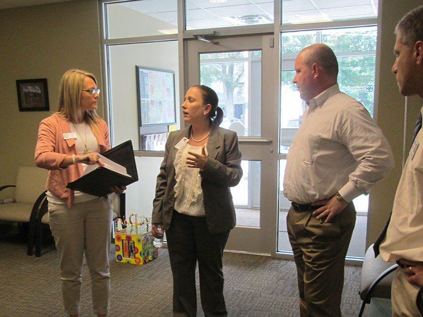
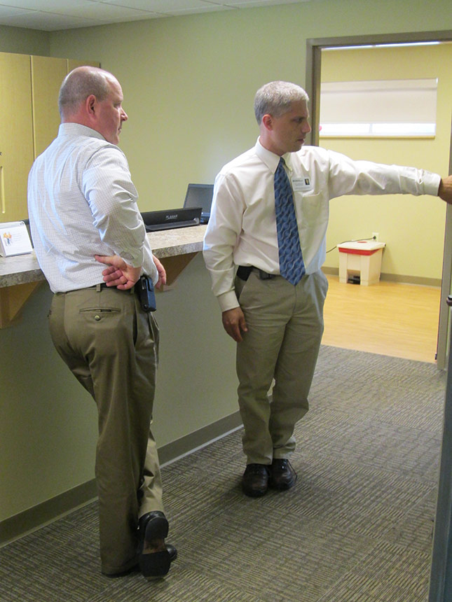
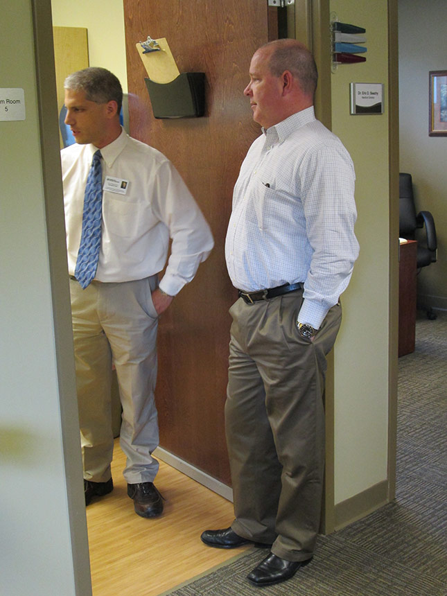
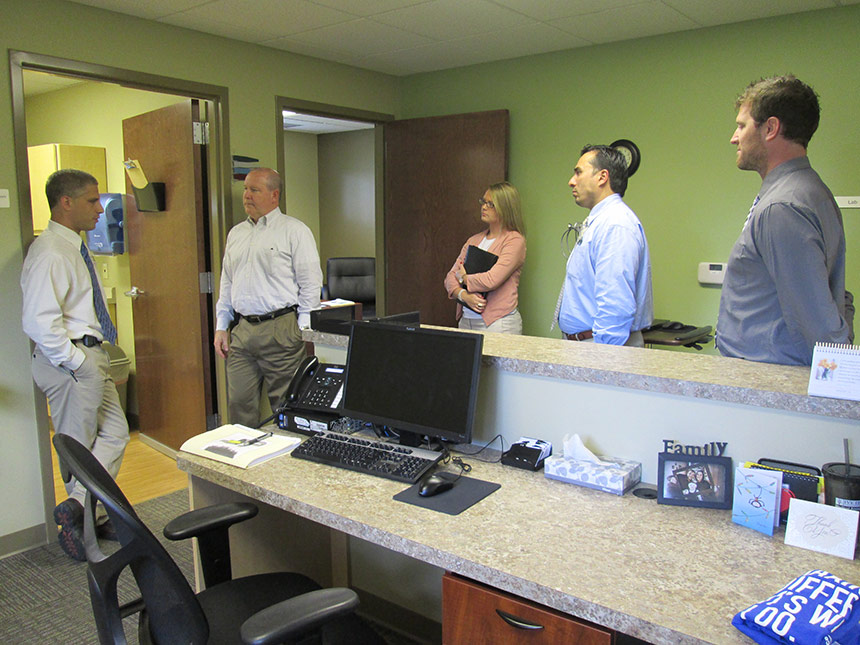
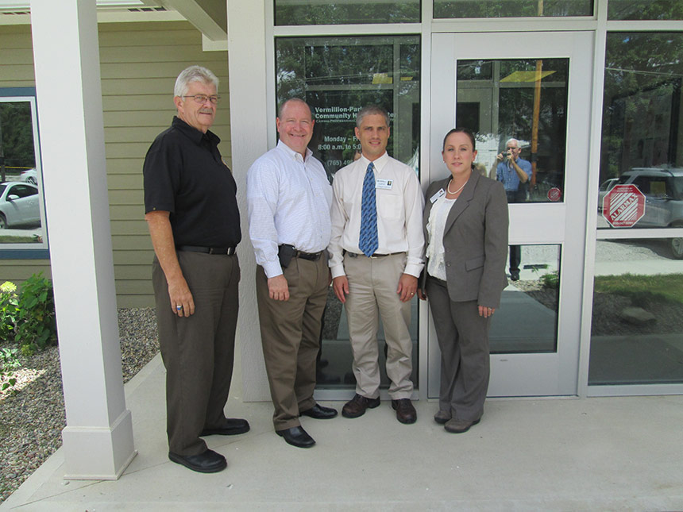
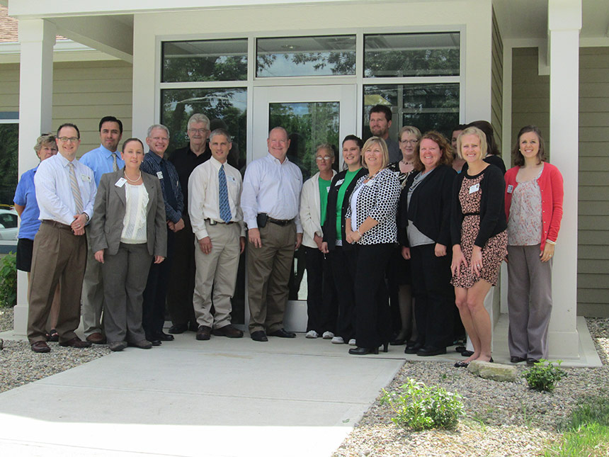

Congressman Buschon Visits during NHCW
August 14, 2013

Congressman Larry Buschon arrives to tour the VPCHC Bloomingdale health center facility during National Health Center Week

Dr. Eric Beachy, VPCHC Chief Medical Officer, shares information with Congressman Buschon about the development and available services at the Bloomingdale facility.

Dr. Beachy and Congressman Buschon discuss the opportunities of patient care with an available minor procedure room at the facility.

Congressman Buschon and VPCHC staff.

VPCHC board member, Jerry Newlin, Congressman Buschon, VPCHC CMO, Dr. Beachy, and VPCHC CEO, Elizabeth Burrows, gather for a photo outside the Bloomingdale health center.

VPCHC staff and Congressman Buschon gather for a photo outside the Bloomingdale health center.